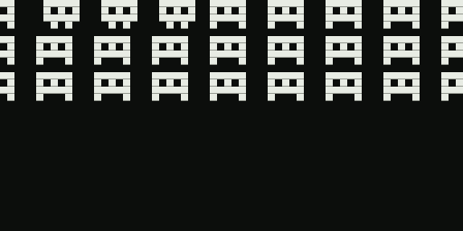
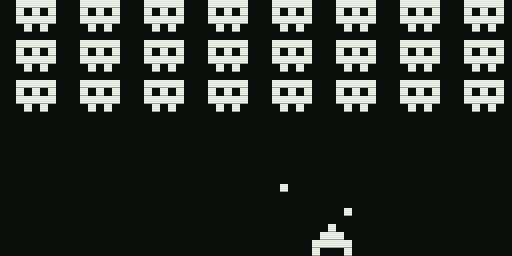

Dream Invaders
Michael J. Bauer · Electronics Australia (1979), cassette 2K RAM


Bauer's own invaders game, written in 6800 machine code rather than CHIP-8: rows of aliens march down while you move your base along the bottom and shoot them. It fills 1.25 KB, so it needs more than the basic 1 KB of RAM.
Keys
0 left, 1 right, 3 fire (in the MiSTer core: OSD Joystick → 0 1 / 3).
Files
| File | Version | Load | Run |
|---|---|---|---|
| Dream Invaders.bin | main | 0200-06FF | 0200 |
Source
Decoded from Michael Bauer's original cassette recording (dream6800_programs_mp3.zip); instructions from his article in Electronics Australia, July 1979. Author: Michael J. Bauer (CHIP-8 programs partly adapted from the RCA COSMAC VIP manual).
Corrections applied
- None: decoded byte for byte from the original cassette recording (tools/tape2bin.py in the core).
Open doubts
None.